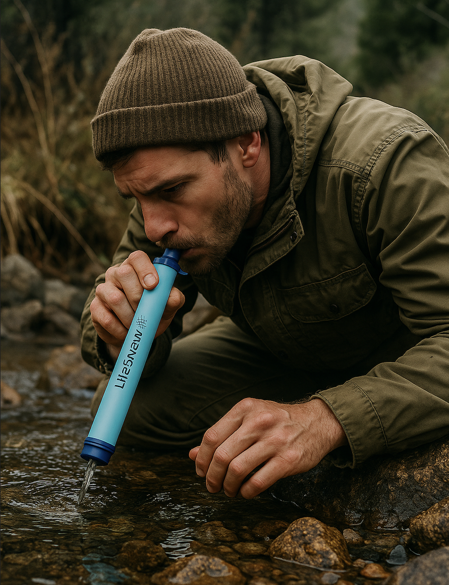

Background Information
This project is to find the best material to filter dirty water. The “dirty” water represents water mixed with soil. There are many mediums used as a filter for water. The following will provide a brief explanation of the efficacies of the materials we will use further in this experiment. Activated Carbon (also known as charcoal) removes contaminants from water by trapping them in the filter's porous carbon structure. AC filters can remove many types of contaminants, including chlorine and hydrogen sulfide, erasing taste and odors, organic chemicals: such as pesticides, herbicides, and volatile organic compounds (VOCs) Disinfection, byproducts: such as chloramines (a mixture of chlorine and ammonia), heavy metals: Such as nickel, and lastly Radioactive chemicals. Fine sand filters small particles such as silt, clay, and organisms such as algae fragments, and some relatively large one-celled microorganisms such as protozoa and cysts, such as Giardia and Cryptosporidiums. Coarse sands and pebbles filter large particles like debris, sediment, and organic matter. For dirt balls, clays such as bentonite filter metaloids such as lead, arsenic, or mercury, and the densely packed structure of the dirt balls can trap organic matters such as silt, clay, or plant residues.
What is LifeStraw?
LifeStraw is a portable water filter and purifier, primarily designed as a straw-like device, that removes bacteria, parasites, and other contaminants from contaminated water, making it safe to drink. It's lightweight, durable, and requires no electricity or spare parts. You can read more on the official website.
